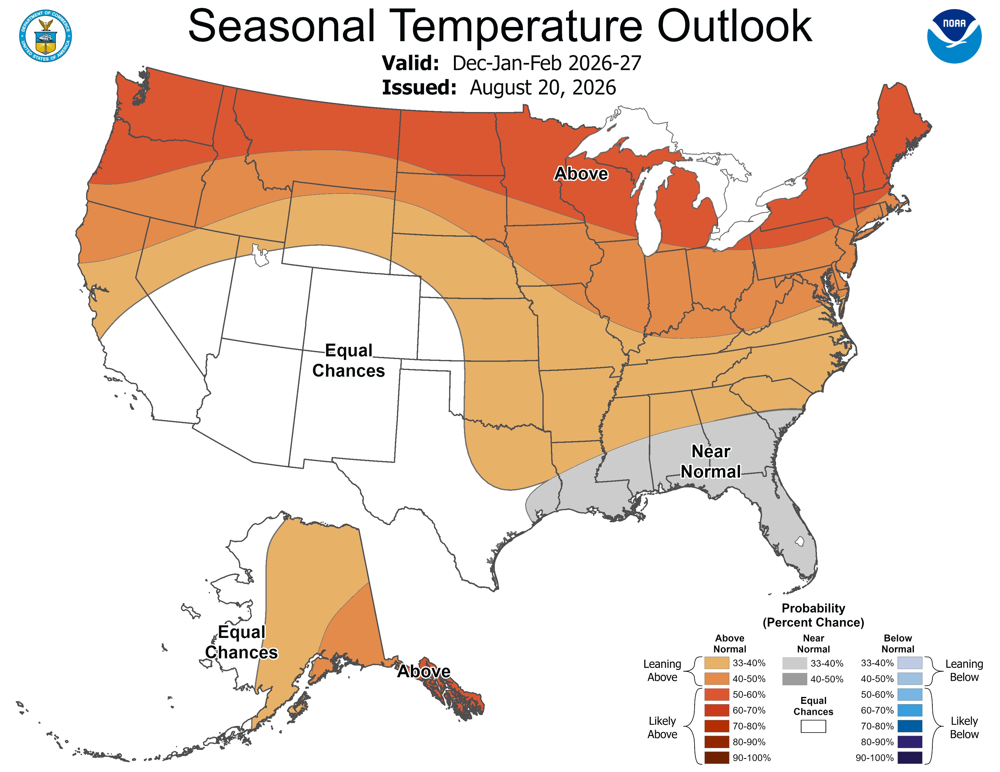
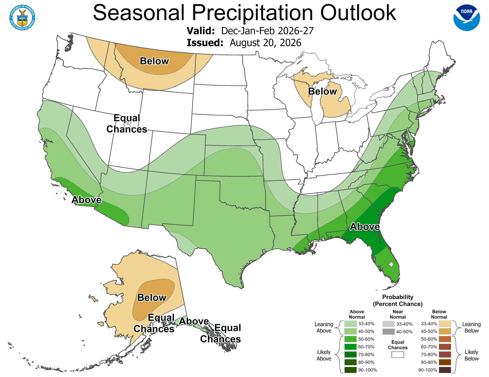

Official winter outlook and station normals for Indiana, plus a ledger of models that did not beat those fields.
How to read
Start on Home. That panel is the intro and the relationship tree that used to live on gist 66b896b0. Winter outlook is the CPC seasonal outlook and the 1991-2020 snowfall normals. Ledger lists studies that lost to a named bar. NWM is three separate river-model files; do not mix the tables. Catalog is one row per study. Maps holds up to two committed figures per study. Status words: locked means the question is answered; parked means the official layer is empty; stop means the window does not overlap.
Indiana research
What this is
These trees are research. Each one asks one question, locks a split, and stops. White River is one lane, not the lab. This console is the readable index: purpose, the bubble tree, lane write-ups, and the catalog.
Lane write-ups stay on their gists. Home holds the relationship tree. Catalog is the table. Winter outlook is CPC plus 1991-2020 normals, not a freeze-date hero.
How they relate
Each bubble is one locked tree or a lane. Click a study bubble to open GitHub, or First and last 32 F for its Pages write-up.
flowchart TD
R["Indiana research"]
R --> M["Maps"]
R --> Q["White River Q"]
R --> P["Precip"]
R --> T["Temp"]
R --> S["Site"]
M --> UW["Upper White HAND"]
UW --> M1["Upper White floodplain completion"]
UW --> M2["Nora wet cells at two stages"]
M2 --> M3["Nora HAND vs USGS FIM"]
UW --> M4["August 2026 high-water marks"]
M --> CAL["Calumet floodplain completion"]
CAL --> CALF["Calumet FIM compare"]
Q --> Q1["Rain to Nora stage"]
Q --> Q2["NWM v2.1 vs yesterday"]
Q --> Q2b["NWM analysis 2025-26"]
Q --> Q2c["NWM medium-range +24 h"]
Q2 --> Q3["Anderson to Nora"]
Q3 --> Q4["Fall Creek at Indianapolis"]
Q4 --> Q5["Eagle Creek vs Nora plus Fall Creek"]
Q4 --> Q6["Eagle Creek vs yesterday"]
P --> P1["Radar vs rain gauges"]
P1 --> P2["Summer radar misses"]
P2 --> P3["Winter lake radar misses"]
P --> P4["Winter snow vs the normal"]
P --> P5["NWI lake-belt snow"]
T --> T1["First and last 32 F"]
T --> T2["October plus ENSO freeze dates"]
T --> T3["Indiana CPC DJF skill"]
S --> S1["Official winter pages"]
S --> S2["indiana_research_console"]
click M1 href "https://github.com/martialsystems/indiana_flood_completion"
click M2 href "https://github.com/martialsystems/white_river_stage_inundation"
click M3 href "https://github.com/martialsystems/white_river_fim_compare"
click M4 href "https://github.com/martialsystems/white_river_hwm_crest"
click CAL href "https://github.com/martialsystems/calumet_flood_completion"
click CALF href "https://github.com/martialsystems/calumet_fim_or_stop"
click Q1 href "https://github.com/martialsystems/white_river_rain_stage"
click Q2 href "https://github.com/martialsystems/white_river_nwm_error"
click Q2b href "https://github.com/martialsystems/nwm_ana_2025_26"
click Q2c href "https://github.com/martialsystems/nwm_forecast_lead_white_river"
click Q3 href "https://github.com/martialsystems/white_river_anderson_nora"
click Q4 href "https://github.com/martialsystems/white_river_fall_creek_gap"
click Q5 href "https://github.com/martialsystems/white_river_eagle_creek_gap"
click Q6 href "https://github.com/martialsystems/white_river_eagle_persistence"
click P1 href "https://github.com/martialsystems/indiana_cocorahs_mrms"
click P2 href "https://github.com/martialsystems/indiana_radar_miss"
click P3 href "https://github.com/martialsystems/indiana_winter_lake_miss"
click P4 href "https://github.com/martialsystems/indiana_djf_snow_tercile"
click P5 href "https://github.com/martialsystems/nwi_lake_effect_snow"
click T1 href "trees/indiana_freeze_date/"
click T2 href "https://github.com/martialsystems/indiana_freeze_enso"
click T3 href "https://github.com/martialsystems/indiana_cpc_djf_skill"
click S1 href "https://github.com/martialsystems/indiana_wx_pages"
click S2 href "https://github.com/martialsystems/indiana_research_console"
This is the current CPC seasonal outlook for Indiana and the station snowfall normals those studies are scored against. Models that lost sit on Ledger, not here.
CPC DJF 2026-27 issued 2026-08-20
Issued 2026-08-20. Valid December 2026 through February 2027. Next CPC update 2026-09-17. Climatology 1991-2020.
Indiana temperature: Above-normal lean. The issued map puts the higher above-normal probabilities over northern Indiana (same band as the Great Lakes) and a weaker tilt over the south. Precipitation: Equal chances. A below-normal lean is drawn over Michigan; it is not drawn across Indiana on this issue.
El Nino is present and strengthening. CPC cites a greater than 90 percent chance of a very strong event this fall and winter. Forecaster Scott Handel, 830 AM EDT Thu Aug 20 2026.


CPC prognostic discussion. The GIFs in this repo are the 2026-08-20 snapshots. CPC's live lead-4 URL changes when the next outlook is issued.
1991-2020 DJF snowfall normals
City
Station
Dec
Jan
Feb
DJF (in)
South Bend
USW00014848
13.7
21.6
16.1
51.4
Fort Wayne
USW00014827
7.6
10.8
7.8
26.2
Indianapolis
USW00093819
6.4
8.8
6.0
21.2
Evansville
USW00093817
2.8
3.4
3.1
9.3
NCEI 1991-2020 MLY-SNOW-NORMAL. DJF is the sum of December, January, and February monthly snowfall normals. Inches. Retrieved 2026-08-29.
Snowfall research:
Ledger
Each row is a study that lost. Compare the held-out number to the bar. Smaller error wins; the bar won.
Locked holdouts. Each row is scored against a named bar. Details stay in the linked repos.
Lower RMSE is better. Yesterday is last day's USGS flow at that gage. AnA has already seen recent observations. Medium-range +24 h is a forecast. v2.1 is an older retrospective. Keep the three tables apart.
Three files stay three. AnA is analysis_assim tm00. Medium-range is +24 h mem1. v2.1 is the retrospective.
Product: analysis_assim_t12z_tm00
AnA tm00
RMSE and MAE in cfs. Yesterday is lag-1 USGS 00060. Window: 2025-01-01 2026-08-31.
Gage
Yesterday RMSE (cfs)
Model RMSE (cfs)
MAE (cfs)
Bias (cfs)
Days
Beats yesterday
Anderson 03348000
813
252
75
-6
604
yes
Nora 03351000
1179
301
127
7
603
yes
Indianapolis 03353000
1472
559
289
-17
604
yes
Centerton 03354000
1770
622
250
67
607
yes
Product: medium_range_mem1_t12z_f024
Medium-range +24 h
RMSE and MAE in cfs. Yesterday is lag-1 USGS 00060. Window: 2025-01-01 2026-08-31.
Gage
Yesterday RMSE (cfs)
Model RMSE (cfs)
MAE (cfs)
Bias (cfs)
Days
Beats yesterday
Anderson 03348000
813
962
254
11
604
no
Nora 03351000
1179
833
365
151
603
yes
Indianapolis 03353000
1472
1200
566
127
604
yes
Centerton 03354000
1770
1448
677
-28
607
yes
Product: nwm_retrospective_v2.1
NWM v2.1 retro
RMSE and MAE in cfs. Yesterday is lag-1 USGS 00060. Window: holdout 2018-10-01 2020-12-31.
Gage
Yesterday RMSE (cfs)
Model RMSE (cfs)
MAE (cfs)
Bias (cfs)
Days
Beats yesterday
Anderson 03348000
676
488
241
-10
823
yes
Nora 03351000
1243
1316
724
70
823
no
Indianapolis 03353000
1450
1994
1198
319
823
no
Centerton 03354000
1795
2414
1549
483
823
no
Catalog
One question per row. The study title opens the locked write-up when that page exists. The slug opens GitHub. A blank part of the row opens figures.
These are committed figures from the pinned studies: floodplain maps, hydrographs, and station plots. Click a name, then click a figure to enlarge. Two figures max per study.
Click a tree, then click a figure to enlarge. Two figures max per tree.
FIM library exists; window is the wrong HUC; stop. SIR 2020-5074 is 07120003; HAND a7dcd81 is 04040001; finite HAND cells 0.
Status: stop (the compare cannot run)
SIR 2020-5074 is Dunn/Straub/Manaster 2020, 24 published profiles, gages 05536195 and 05536290. Those gages are HUC 07120003. Frozen HAND a7dcd81 is HUC 04040001. Finite HAND cells on the Munster to South Holland window: 0. Stop.